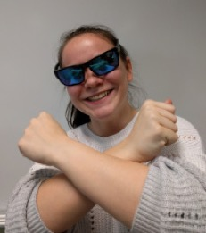
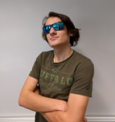

Brody Gnarly is one of our senior Bungee jump instuctors, who has been operating our site for the past 60 years. Hobbies include kite-surfing, marshmellows, and long walks on the beach.
Quite possibly the most Chad a Chad can be, Chad Chaddeth is our lead skydive instructor. You'll be safe and secure strapped to her. In her spare time, she enjoys bowling and walking her dog, skipper.
Kyleth Kaymen, our lead Outdoors leader and hiking expert, is more than capable for any adventure you throw at him. He once survived 4 weeks in the Calorado mountains in winter without shoes, nothing but a rusty can to proect himself, and a staff T-Shirt to keep him warm. In his free time, he runs a profitable turtle-breeding business.
exTremebig Guns is our Water master, having travelled over 100000 miles in her canoe exploring Canada's lakes and river's, she has every qualification possible. Though intimidating with giant biceps, Guns is actually more peacefull than a monkey in India. As a hobby, she wrestles silverback Gorillas.